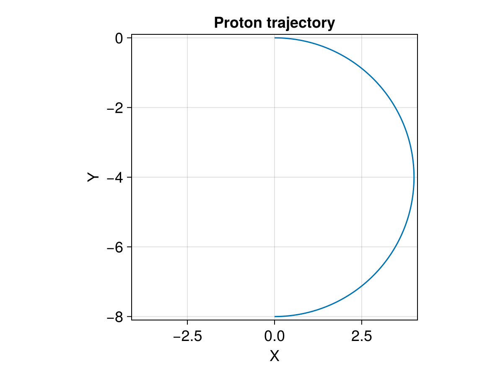
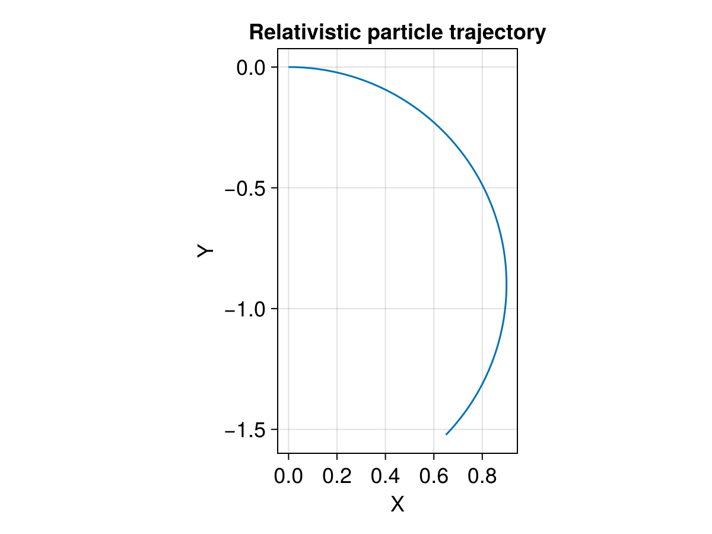

Dimensionless Units


This example shows how to trace charged particles in dimensionless units. After normalization, $q=1, B=1, m=1$ so that the gyroradius $r_L = mv_\perp/qB = v_\perp$. All the quantities are given in dimensionless units: if the magnetic field is homogeneous and the initial perpendicular velocity $v_{\perp 0}^\prime$ is 4, then the gyroradius is 4. To convert them to the original units, $v_\perp = v_{\perp}^\prime * U_0$ and $r_L = r_L^\prime * l_0 = 4*l_0$. Check Demo: single tracing with additional diagnostics and Demo: Dimensionless and Dimensional Tracing for explaining the unit conversion.
Tracing in dimensionless units is beneficial for many scenarios. For example, MHD simulations do not have intrinsic scales. Therefore, we can do dimensionless particle tracing in MHD fields, and then convert to any scale we would like.
Now let's demonstrate this with trace_normalized! and trace_relativistic_normalized!.
using TestParticle, OrdinaryDiffEqVerner, StaticArrays
using TestParticle: qᵢ, mᵢ
using CairoMakie
# Number of cells for the field along each dimension
nx, ny, nz = 4, 6, 8
# Unit conversion factors between SI and dimensionless units
B₀ = 10e-9 # [T]
Ω = abs(qᵢ) * B₀ / mᵢ # [1/s]
t₀ = 1 / Ω # [s]
U₀ = 1.0 # [m/s]
l₀ = U₀ * t₀ # [m]
E₀ = U₀*B₀ # [V/m]
# All quantities are in dimensionless units
x = range(-10, 10, length=nx) # [l₀]
y = range(-10, 10, length=ny) # [l₀]
z = range(-10, 10, length=nz) # [l₀]
B = fill(0.0, 3, nx, ny, nz) # [B₀]
B[3,:,:,:] .= 1.0
E = fill(0.0, 3, nx, ny, nz) # [E₀]
param = prepare(x, y, z, E, B; species=User)
# Initial condition
stateinit = let
x0 = [0.0, 0.0, 0.0] # initial position [l₀]
u0 = [4.0, 0.0, 0.0] # initial velocity [v₀]
[x0..., u0...]
end
# Time span
tspan = (0.0, π) # half gyroperiod
prob = ODEProblem(trace_normalized!, stateinit, tspan, param)
sol = solve(prob, Vern9())
### Visualization
f = Figure(fontsize = 18)
ax = Axis(f[1, 1],
title = "Proton trajectory",
xlabel = "X",
ylabel = "Y",
limits = (-4.1, 4.1, -8.1, 0.1),
aspect = DataAspect()
)
lines!(ax, sol, idxs=(1,2))

In the relativistic case,
- Velocity is normalized by speed of light c, $V = V^\prime c$;
- Magnetic field is normalized by the characteristic magnetic field, $B = B^\prime B_0$;
- Electric field is normalized by $E_0 = c\,B_0$, $E = E^\prime E_0$;
- Location is normalized by the $L = c / \Omega_0$, where $\Omega_0 = q\,B_0 / m$, and
- Time is normalized by $\Omega_0^{-1}$, $t = t^\prime * \Omega_0^{-1}$.
In the small velocity scenario, it should behave similar to the non-relativistic case:
param = prepare(xu -> SA[0.0, 0.0, 0.0], xu -> SA[0.0, 0.0, 1.0]; species=User)
tspan = (0.0, π) # half period
stateinit = [0.0, 0.0, 0.0, 0.01, 0.0, 0.0]
prob = ODEProblem(trace_relativistic_normalized!, stateinit, tspan, param)
sol = solve(prob, Vern9())
### Visualization
f = Figure(fontsize = 18)
ax = Axis(f[1, 1],
title = "Relativistic particle trajectory",
xlabel = "X",
ylabel = "Y",
#limits = (-0.6, 0.6, -1.1, 0.1),
aspect = DataAspect()
)
lines!(ax, sol, idxs=(1,2))

In the large velocity scenario, relativistic effect takes place:
param = prepare(xu -> SA[0.0, 0.0, 0.0], xu -> SA[0.0, 0.0, 1.0]; species=User)
tspan = (0.0, π) # half period
stateinit = [0.0, 0.0, 0.0, 0.9, 0.0, 0.0]
prob = ODEProblem(trace_relativistic_normalized!, stateinit, tspan, param)
sol = solve(prob, Vern9())
### Visualization
f = Figure(fontsize = 18)
ax = Axis(f[1, 1],
title = "Relativistic particle trajectory",
xlabel = "X",
ylabel = "Y",
aspect = DataAspect()
)
lines!(ax, sol, idxs=(1,2))

This page was generated using DemoCards.jl and Literate.jl.